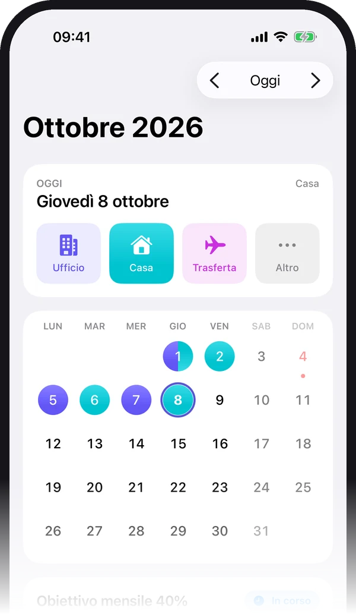
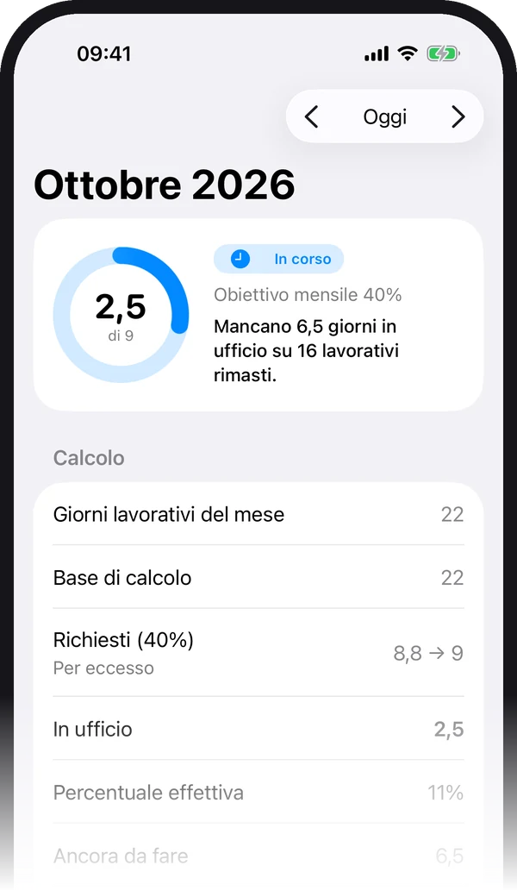
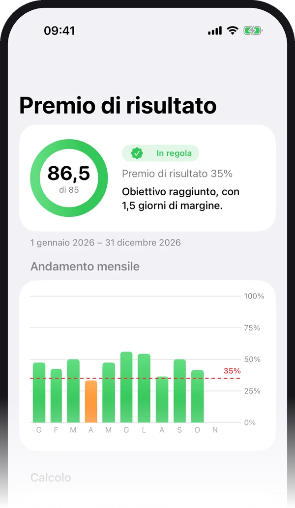

Un tocco al giorno
Ufficio, casa o trasferta direttamente dalla schermata principale, dal widget o con Siri. Ferie, malattia, permesso e chiusura con un tocco in più.
Ufficio o casa? Sempre in regola.
La tua azienda ti chiede di andare in ufficio il 40% dei giorni? E magari il premio di risultato dipende da un altro 35% sull'anno? Segni ogni giornata con un tocco e HomeOffice ti dice quanti giorni ti mancano, togliendo da sola ferie, malattie, permessi e festività.
Per iPhone e iPad, iOS 18 o successivo · Nessun account · Italiano, inglese, francese, tedesco, spagnolo

Pensata per chi ha una regola aziendale sulle presenze e vuole smettere di contare a mano sul calendario.
Ufficio, casa o trasferta direttamente dalla schermata principale, dal widget o con Siri. Ferie, malattia, permesso e chiusura con un tocco in più.
Mattina in ufficio e pomeriggio da casa, o mezza giornata di ferie: ogni metà vale 0,5 giorni e il calendario la mostra divisa a metà.
Scegli la percentuale richiesta dalla tua azienda. Vedi quanti giorni servono questo mese, quanti ne hai fatti e quanti giorni lavorativi ti restano.
Facoltativo: un secondo obiettivo con una percentuale diversa, misurato sull’anno lavorativo che scegli tu, con la proiezione dei giorni a settimana che servono.
Festività nazionali di 15 paesi europei già incluse. Il Santo Patrono e le chiusure aziendali le aggiungi tu, anche ricorrenti ogni anno.
Grafici per settimana, mese e anno: percentuale in ufficio rispetto all’obiettivo e composizione dei giorni tra ufficio, casa e assenze.
Widget per la schermata Home e il Blocco schermo con i pulsanti Ufficio e Casa, un controllo nel Centro di Controllo e frasi pronte per Siri.
Una notifica nel giorno e all’ora che preferisci, con il riepilogo dei giorni in ufficio che ti mancano nel mese.
Esporti tutto in Excel o in un report PDF da girare a chi vuoi, e importi le presenze da un file Excel preparato anche a mano.
Ferie, malattia, permessi e festività non sono giorni lavorativi: vengono tolti dalla base. La trasferta vale come ufficio. Poi la percentuale si applica a quello che resta, e l'arrotondamento è quello della tua azienda.


Dove lavori e quando sei in ferie o in malattia sono informazioni personali. Per questo HomeOffice è costruita così.
Le giornate stanno sul tuo iPhone e si sincronizzano nel tuo iCloud personale, direttamente fra te e Apple. Noi non le vediamo.
L’app non contiene reti pubblicitarie e non ti traccia. Raccoglie solo statistiche d’uso anonime, per capire come migliorarla.
Non serve registrarsi e l’app non chiede la tua azienda né il tuo datore di lavoro: segni solo dove hai lavorato.
Excel e PDF vengono generati sul telefono e sei tu a decidere dove salvarli o a chi inviarli.
Tutti i dettagli sono nella Privacy Policy.
È un'app per iPhone e iPad per chi lavora in modalità ibrida e deve rispettare una percentuale minima di presenze in ufficio. Segni ogni giornata come ufficio, casa, trasferta, ferie, malattia, permesso o chiusura, e l'app calcola se sei in regola con l'obiettivo mensile e, se la tua azienda lo prevede, con quello del premio di risultato.
Si parte dai giorni lavorativi del periodo (lunedì–venerdì oppure lunedì–sabato), si tolgono festività, ferie, malattie, permessi e chiusure, e si applica la percentuale richiesta. Il risultato viene arrotondato come fa la tua azienda: per esempio 22 giorni al 40% fanno 8,8, che diventano 8 per difetto o 9 per eccesso. Le trasferte valgono come giorni in ufficio.
No, non riducono la tua percentuale: vengono tolte dai giorni lavorativi su cui si calcola l'obiettivo. Le festività nazionali di 15 paesi europei sono già incluse; il Santo Patrono e le chiusure aziendali si aggiungono dalle Impostazioni.
È un secondo obiettivo facoltativo, con una percentuale diversa (per esempio 35%) misurata su un anno lavorativo di cui scegli inizio e fine. L'app mostra quanti giorni hai fatto, quanti ne servono, quanti giorni a settimana ti mancano e, se non è più raggiungibile, la percentuale massima che puoi ancora ottenere.
Sì. Ogni giornata ha una mattina e un pomeriggio: per esempio mattina in ufficio e pomeriggio da casa, oppure mezza giornata di ferie. Ogni metà vale 0,5 giorni nel calcolo.
Restano nella memoria del tuo iPhone e vengono sincronizzati nel tuo account iCloud personale, così li ritrovi sugli altri dispositivi con lo stesso Apple Account. Non esiste alcun server dello sviluppatore e l'app non contiene pubblicità. Raccoglie solo statistiche d'uso anonime, che non includono le tue giornate.
Sì. L'app legge un file .xlsx con una colonna Data e una colonna con il tipo di giornata, oppure con le colonne Mattina e Pomeriggio. Riconosce le etichette più comuni in cinque lingue, come Ufficio, Smart working, Ferie o Trasferta, e puoi esportare tutto in Excel e PDF.
Funziona su iPhone e iPad con iOS 18 o versione successiva. L'interfaccia è disponibile in italiano, inglese, francese, tedesco e spagnolo, e la lingua dell'app si può scegliere indipendentemente da quella di sistema.
HomeOffice è disponibile su App Store. Per domande o per segnalarci qualcosa puoi scriverci quando vuoi.
Scarica suApp Store